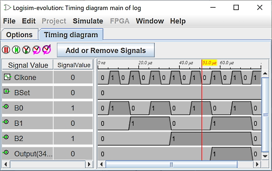

Временная диаграмма
Подразделы:
Выбор сигналов
Окно временной диаграммы
Для понимания работы или отладки схемы часто бывает очень полезно иметь возможность наблюдать за изменением различных сигналов в визуальной форме. В этом и заключается цель временной диаграммы. Данный модуль позволяет записывать сигналы в графическом виде или в виде таблицы значений в текстовом файле.

Вы можете открыть модуль временной диаграммы через меню | Моделирование | → | Временная диаграмма... |. Это приведёт к открытию окна выбора сигналов.
Ниже приведена схема в качестве поясняющего примера для модуля временных диаграмм.

В качестве задающего генератора для отображения сигналов выступают тактовые генераторы. Модулю моделирования известны два специальных тактовых сигнала: один является обязательным и должен иметь имя sysclk, а другой — необязательным вспомогательным с именем clk.
Примечание: крайне важно, чтобы в вашей схеме присутствовал тактовый генератор с именем sysclk. Он будет использоваться модулем временных диаграмм в качестве базы времени. При этом ему не обязательно быть подключённым к вашей схеме. Как правило, он должен быть самым быстрым тактовым сигналом и иметь рабочий цикл 1/1 такт.
Далее: Вкладка Выбор.